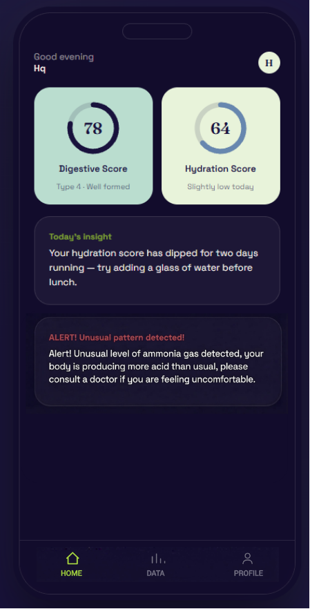
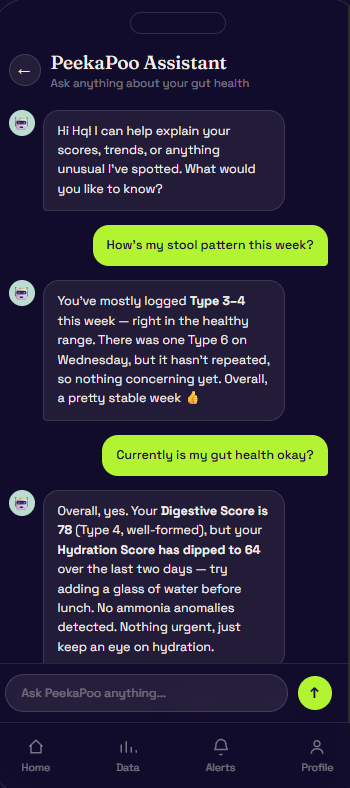

Your gut,
explained
Scores, trends and alerts from every visit — in one HarmonyOS app.
Explore the ScreensPeace of mind,
not more screen time
PeekaPoo works in the background. Open the app when you want a quick look at today's scores — or when something has genuinely changed. No logging, no streaks to keep, nothing to remember.
Okay… but what do all
these results mean?
Four screens turn every visit into something you can read at a glance.

Everything at a glance
- Digestive Score
- Based on the Bristol Stool Form Scale.
- Hydration Score
- Based on urine colour.
- Daily Insight
- Based on daily records and trends in your readings.
- Alert Warnings
- Raised on unusual patterns or trends.
Your gut health index
- Bristol Type Chart
- Visualises your bowel pattern over time.
- Category View
- Track stool colour, consistency and shape patterns.
- Bristol Stool Icons
- Tap any type to learn what it means.
Learn every type
Each stool type opens a plain-language card: what it represents, possible causes, and what you can do about it — from hydration to a bland diet for a day or two.
Urine & gas signals
Urine colour distribution for the month, plus ammonia and VOC levels from the gas array over the past seven days — tracked alongside each other so a single spike is never read in isolation.
Ask PeekaPoo anything
Ask about your stool patterns, scores and weekly trends, and get an answer grounded in your own data — not generic advice.
How's my stool pattern this week?
You've mostly logged Type 3–4 this week — right in the healthy range. There was one Type 6 on Wednesday, but it hasn't repeated, so nothing concerning yet.
Currently, is my gut health okay?
Overall, yes. Your Digestive Score is 78 but your Hydration Score has dipped to 64 over the last two days — try adding a glass of water before lunch.
A small on-device language model only words the answer. Risk levels come from transparent rules, not the chatbot.

-
Digestive Score · 78
-
Today's insight
-
Unusual pattern detected
Insights you can act on
Daily insights explain what changed and what to try next. Alerts only appear when a pattern breaks from your own baseline — and say when it is worth talking to a doctor.
Your system for daily gut insights
PeekaPoo device + HarmonyOS app
Attach PeekaPoo behind your toilet. Use the bathroom as usual. See what your body is telling you in the app — with an AI assistant that explains your trends in plain words.
How it Works- Atlas 200I DK A2Edge inference
- Hi3861Sensor control
- HarmonyOSMobile app
- Huawei CloudTrends & OTA
- ModelArtsModel training
- ICT CompetitionInnovation Track 2026–27